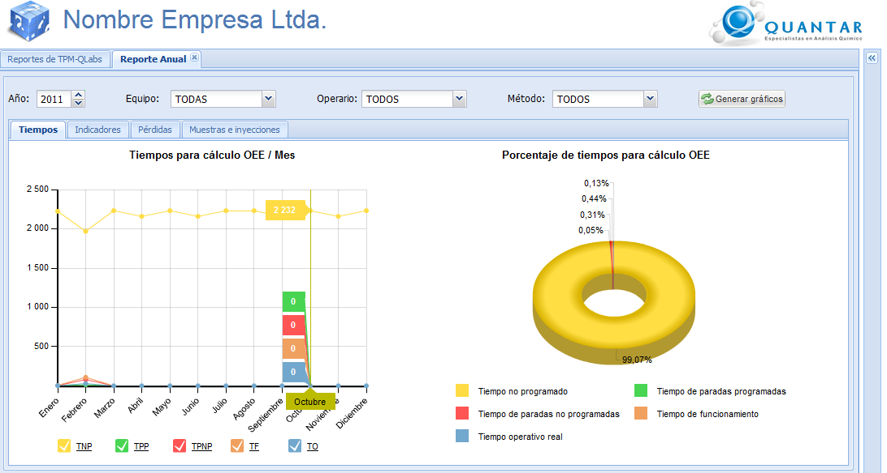
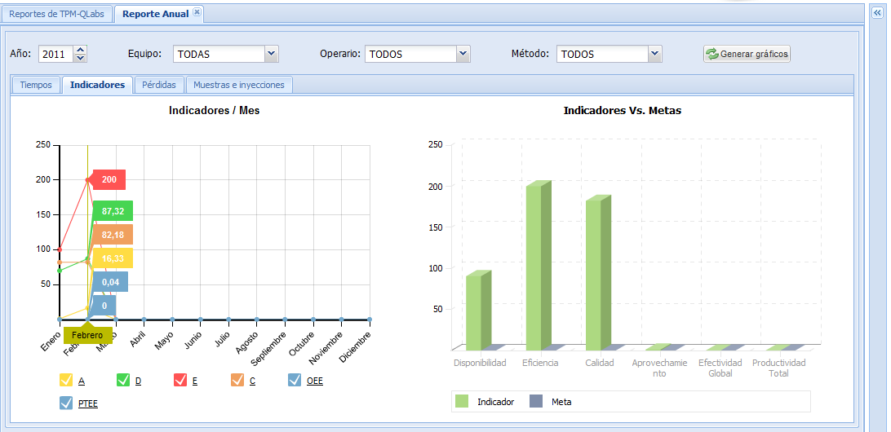
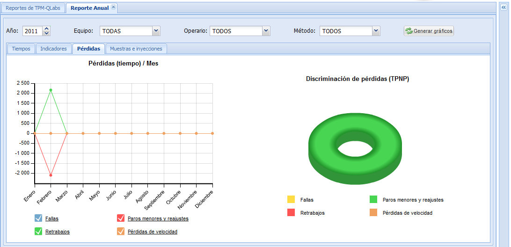
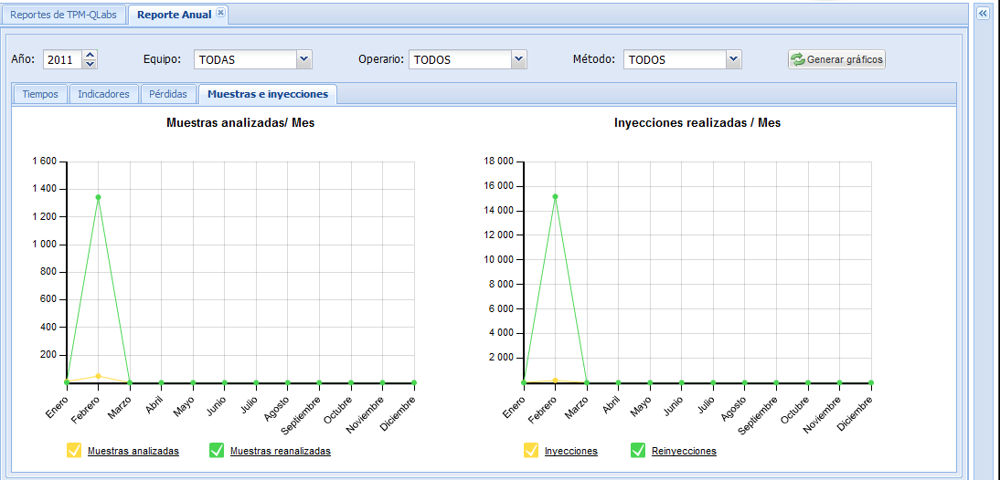

Reporte anual
El reporte anual mediante la opción multireporte, le muestra
información de tiempos, indicadores, pérdidas y muestras e
inyecciones
en gráficos de torta, barras y de dispersión para un año específico,
tal y como se evidencia en las Figuras 1, 2, 3 y 4.
Para configurar el reporte anual generado, seleccione además del
año, alguno de los criterios disponibles tales como equipo, analista
y/o método y pulse el botón Generar
gráficos.
Reporte anual de tiempos

Figura 1. Pantalla de reporte
anual de tiempos.
Reporte
anual de indicadores

Figura 2. Pantalla de reporte anual indicadores.
Reporte anual de pérdidas

Figura 3. Pantalla de reporte anual de pérdidas.
Reporte
anual de muestras e inyecciones

Figura 4. Pantalla reporte anual de muestras e inyecciones.